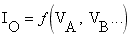

This primitive is similar to the linear primitive already mentioned. The device exists specifically to retain compatibility with the POLY sources of SPICE 2G, which were dropped in SPICE3. The output current is given by:

where f() is an arbitrary polynomial function, VA is the first controlling voltage, VB is the second controlling voltage, and so on. The device needs to have a pair of pins for each of its controlling inputs, and a pair of pins for the output current source. The number of controlling inputs, or the order of the polynomial function, must be specified by the property POLY. The coefficients of the polynomial are given by properties which consist of the appropriate letters prefixed with 'C', for example:
CABB=3.3
means the VAVB2 coefficient equals 3.3.
By connecting a resistor in parallel with the output, a voltage-controlled voltage source may be modelled. This is facilitated by the RPARA property.
The non-linear voltage controlled current source has the following properties:
| Property | Default | Description |
POLY |
- |
Polynomial Order (number of controlling inputs) |
RPARA |
0 |
Parallel output resistor |
Cxx |
- |
Coefficient (as described above) |
VALUE |
0 |
The D.C. coefficient. |
See Also: